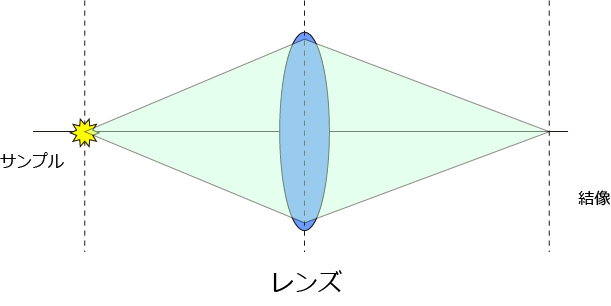
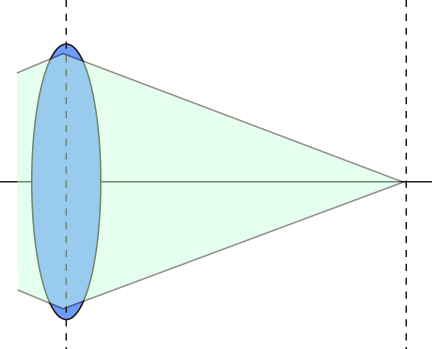
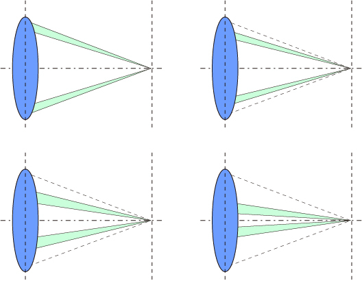
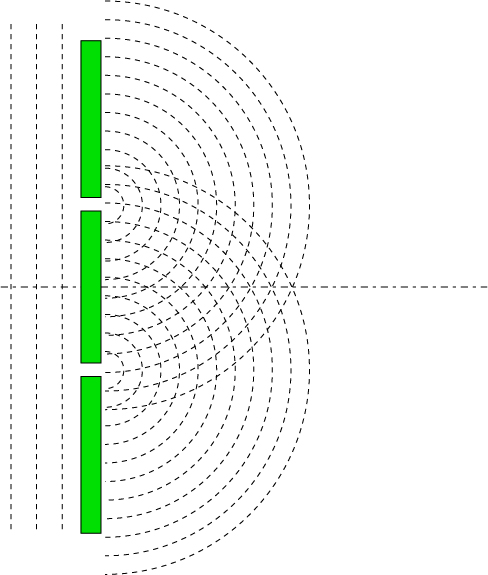

点像分布関数 (PSF , Point spread function) について-01
さて，このAiry Discはどのようにして計算できるのでしょうか？
一般的には，タイトルのように，PSF, Point spread functionと呼ばれる関数で，きちんと解く（特に二次元）とベッセル関数なるものが出てきてとてもややこしいものです．
ここでは，顕微鏡の分解能，という立場から簡単に（つまり1次元的に）解いてみましょう．
今回の計算は，いろいろな文献を拾い上げてまとめたものです．以下にその文献を挙げておきます．
振動・波動のききどころ
生細胞蛍光イメージング
さて，前のページにもありますように，結像は以下の図のような光学系になります．

ここで，レンズを通過した以降のみを考えましょう．

この図から言えることは，
結像するには，レンズのいろいろな場所から光が集まる
ということですね．
では，これを分割して考えましょう．軸対象なので，

こーんな感じに，レンズ状において光の通る道筋を分けて考えましょう．
これはすなわち，
二点の開口部からの光の回折現象
となるわけです，ここがポイントとなります．つまり，

こんな感じとなりますね．
この2点から発せられる波が回折現象によりどのような強度分布で伝わるかを考えてみましょう．